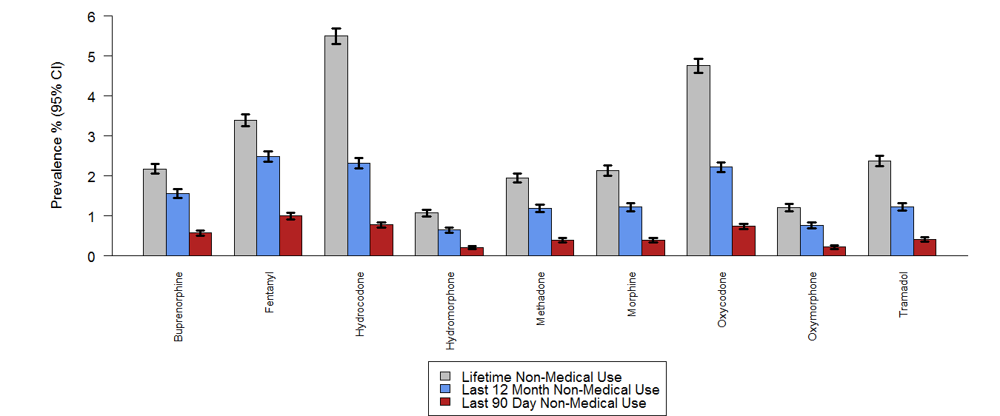
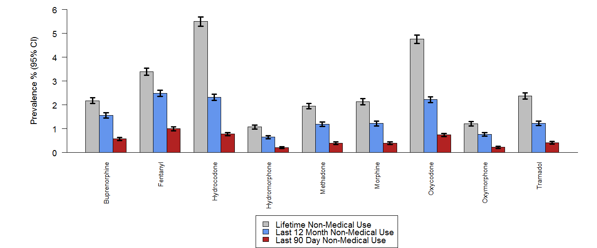

8 Programming with ggplot2
Programming with ggplot2 can be a pain in the ass tricky. The same features that allow ggplot2 to build complex graphs easily makes programming and writing functions more complicated with it. Genearlly speaking the more flexibility you want the more difficult it will be.
There are three main function levels you will do. you will generally write functions to:
- Modify a single component
- Modify multiple components
- Create an entire plot.
There are also a few one(ish) time things you’ll write like themes and color palettes.
Remember the plot from last chapter.
library(tidyverse)
#> -- Attaching packages ------------------------------------------------------- tidyverse 1.2.1 --
#> v ggplot2 2.2.1 v purrr 0.2.4
#> v tibble 1.4.2 v dplyr 0.7.4
#> v tidyr 0.8.0 v stringr 1.3.0
#> v readr 1.1.1 v forcats 0.3.0
#> -- Conflicts ---------------------------------------------------------- tidyverse_conflicts() --
#> x dplyr::filter() masks stats::filter()
#> x dplyr::lag() masks stats::lag()
dat <- readRDS("./data/bargraphdat.RDS")
# convert the use_type to a factor with the correct label
dat$use_type <-factor(dat$use_type, levels = c("use", "nmu"), labels = c("Lifetime Use", "Lifetime Non-Medical Use"))
bar_colors <- c("Lifetime Use" = "grey", "Lifetime Non-Medical Use" = "blue")
p <- ggplot(data = dat, aes(x = drug, y = mean, fill = use_type, ymin = lower, ymax = upper)) +
geom_col(position = "dodge", width = 0.75) +
geom_errorbar(position = position_dodge(width = 0.75), width = 0.5) +
scale_fill_manual(values=bar_colors) + # change the bar colors
scale_y_continuous(breaks = seq(0, ceiling(max(dat$upper)), 5), # change the y-axis scale
expand = c(0,0)) + # remove the spacing between the x axis and the bars
labs(x = NULL, # Remove the x-axis label "drug"
y = "Prevalence % (95% CI)") + # Change the y-axis label
theme_classic() +
theme(legend.position = "bottom", # move the legend to the bottom
legend.title = element_blank(), # remove the legend variable
axis.text.x = element_text(angle = 90, hjust = 1), # rotate the x-axis text
axis.ticks.x = element_blank()) # remove the x asix tick marks
p
8.1 Single Components
Let’s say we do error bars often and we’ve had trouble with consitancy. One way to help with that is to write a wrapper function arround geom_errorbar with our typical settings. This make a drop in replacement
errorbar <- geom_errorbar(position = position_dodge(width = 0.75),
width = 0.5)
#
p <- ggplot(data = dat, aes(x = drug, y = mean, fill = use_type, ymin = lower, ymax = upper)) +
geom_col(position = "dodge", width = 0.75) +
errorbar +
scale_fill_manual(values=bar_colors) + # change the bar colors
scale_y_continuous(breaks = seq(0, ceiling(max(dat$upper)), 5), # change the y-axis scale
expand = c(0,0)) + # remove the spacing between the x axis and the bars
labs(x = NULL, # Remove the x-axis label "drug"
y = "Prevalence % (95% CI)") + # Change the y-axis label
theme_classic() +
theme(legend.position = "bottom", # move the legend to the bottom
legend.title = element_blank(), # remove the legend variable
axis.text.x = element_text(angle = 90, hjust = 1), # rotate the x-axis text
axis.ticks.x = element_blank()) # remove the x asix tick marks
p
The main problem with this function is there is no way for the user to change any of the other properties of the error bar. This may be the desired behaviour but it seems limiting. Let’s re-write the function to allow the user to control some aspects of the error bar.
errorbar2 <- function(position = position_dodge(width = 0.75),
width = 0.5, ...) {
geom_errorbar(position = position, width = width, ...)
}
# make the error bars red
p <- ggplot(data = dat, aes(x = drug, y = mean, fill = use_type, ymin = lower, ymax = upper)) +
geom_col(position = "dodge", width = 0.75) +
errorbar2(color = "red") +
scale_fill_manual(values=bar_colors) + # change the bar colors
scale_y_continuous(breaks = seq(0, ceiling(max(dat$upper)), 5), # change the y-axis scale
expand = c(0,0)) + # remove the spacing between the x axis and the bars
labs(x = NULL, # Remove the x-axis label "drug"
y = "Prevalence % (95% CI)") + # Change the y-axis label
theme_classic() +
theme(legend.position = "bottom", # move the legend to the bottom
legend.title = element_blank(), # remove the legend variable
axis.text.x = element_text(angle = 90, hjust = 1), # rotate the x-axis text
axis.ticks.x = element_blank()) # remove the x asix tick marks
p
8.2 Multiple Components
8.3 Whole Plots
Creating small reusable components is most in line with the ggplot2 spirit: you can recombine them flexibly to create whatever plot you want. But sometimes you’re creating the same plot over and over again, and you don’t need that flexibility. Instead of creating components, you might want to write a function that takes data and parameters and returns a complete plot.
8.4 Plot Style
 
